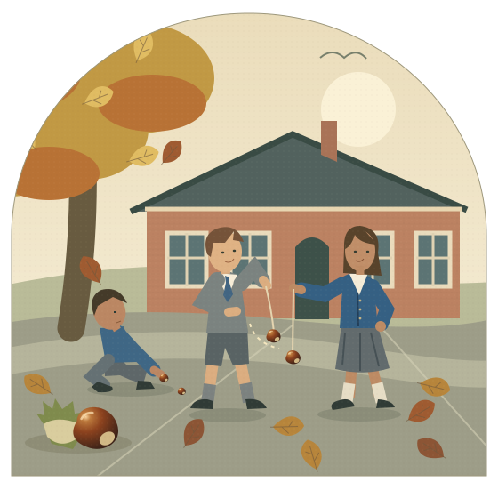

Schoolyard custom, not championship law. With a Surrey school setting—and the gaps left visible.

Original illustration, not an archival photograph. Clothing draws on Buckland Village School’s written uniform scheme; children and schoolyard are imagined. [2]
FIELD NOTES / 01Collection → combat → keepsakeSurrey · London · a northern comparison
01 / A season, not a fixture list
From the first find to the last challenger.
The sequence below is an interpretive reconstruction of the season remembered in this project’s brief. It is not a dated Buckland pupil’s diary. Its objects and disputed customs are cross-referenced to the evidence.
Reconstructed scene · botanical background [4]
You knew which tree.
Not a shop. Not a sports cupboard. The season began under a horse chestnut: looking into the grass, nudging aside leaves, finding the brown shine inside a split green case. Ripe conkers usually fall in September and October; the exact schoolyard season need not follow a fixed date. [4]
Imagine the detour home becoming a collecting route. One find in a pocket is a curiosity; someone else bringing a string makes it a game.
Under the tree: the season’s raw material
Reconstructed selection · later practical comparison [4]
The biggest wasn’t a promise.
The imagined sorting takes place on a wall, a desk or a kitchen table: the handsome giant, the smaller round one, the flat-sided one, the doubtful one with a split. A later practical guide favours firm, undamaged finds and keeping spares. It calls flat-sided specimens cheesers, without assigning that word to Surrey. [4]
Here, choosing a champion is a judgement, not an inspection certificate. A glossy skin cannot tell you how many games it will last. The rejected handful still matters: it is the supply of replacements.
Someone makes a hole through the centre; a string or old shoelace is threaded through and secured underneath with a knot large enough not to pull through. The ordinary craft comes before the extraordinary claims. Adult help with piercing is the sensible present-day approach. [5]
Vinegar was remembered as a 1970s schoolchild’s hardening trick. Baking, varnish and keeping last year’s nut belong to the wider repertoire of claims. These are reported beliefs, not proven recipes; whether treatment counted as cleverness or cheating depended on the agreed game. No heating or chemical instructions are needed here. [7][5]
The knot holds the nut. The story adds the magic.
Reconstruction · rules compared below
“Are we playing no stamps?”
That is imagined dialogue, but a real kind of negotiation. Before the first swing: whose go, which score, how many attempts, what happens to tangled strings, what happens if a conker drops? The game has rules; it does not have one universally obeyed rulebook. [1][6][9]
One nut hangs still. The other is drawn back and swung towards it. A hit need not break either nut, and the attacker can break too. The surviving conker earns its next claim only when a game is actually won—not because the bell interrupts an unfinished bout. [5]
Two nuts. A small crowd. A large dispute.
Inter-game care · practical reconstruction
Same conker. More history.
In this reconstruction, the small ritual between games is to rub off dirt, inspect a pale chip or widening split, check the hole and tighten the knot. A fraying lace can be replaced; string can be wound up before the nut goes back in the pocket. These are plausible acts of care, not a recovered Surrey maintenance checklist.
Re-threading an intact nut is different from replacing a shattered one; that distinction remains explicit even in modern championship rules. Agree what still counts as playable. A new nut cannot simply inherit the old one’s identity. And checking a crack does not mend it. [6]
The white scar becomes part of its biography.
The remembered seasonal arc · interpretive reconstruction
The last nut wasn’t always beaten.
The good collecting spots have been picked over. Spares are used up, discarded or forgotten. Some children have lost their last playable nut; others no longer bring one. Your own might have managed one, two or three victories. Perhaps it is now in pieces. Perhaps it is still quite sound.
But a conker needs another conker. With no challenger, survival stops producing games. A chase starts, or a ball appears, or another craze takes the space. There is no closing ceremony. An undefeated nut in a drawer can mark the end just as well as a broken one in the playground.
Still here. No one left to play.
1 of 6
02 / The playground’s own index
Words in a pocket.
A seed folksonomy: overlapping tags for objects, actions, claims and customs—not an official taxonomy. Follow a tag, compare a spelling, or add a remembered word to your own local notebook.
Period record = dated testimony or contemporary report. Later memory = recollection written afterwards. Later comparison = useful, but not proof of 1979 usage. Reconstruction = this page’s descriptive vocabulary. Place labels are evidence locations, not borders.
Add a memory to your own fieldbook
Your entry stays in this browser’s storage, if available. It is not sent to a server or published, and remains an unverified memory. Export a copy before clearing browser data. Do not include someone else’s personal details.
03 / A nut’s career
A swing is not a win.
Separate a strike from a turn, a game from a conker’s entire career. “Round” can blur these together. A surviving nut has not necessarily won anything yet.
One-er, two-er, three-er…
Keep the nut’s rank separate from the owner’s total successes. In the simple win-count convention, a completed victory adds one. Names such as one-er and two-er also appear in later practical accounts. [4]
In a separately documented inherited-score convention, the victor takes its own score, the defeated nut’s score, and one for this victory. A high rank can therefore represent fewer actual games. Later guides give this rule explicitly; it is not established here as Buckland’s rule. [4][9]
In that version, a two-er beating a three-er becomes a six-er: 2 + 3 + 1. A bell-time interruption, a miss or merely enduring a blow adds nothing. A replacement starts afresh.
Try the two conventions
This is the score after winning the whole game, not after six strikes.
Agree before swinging.
Decide first strike, attempts, tangles, drops and scoring. First-go cries were one solution; Wigan’s “Bagsie first cracks!” was reported in 1970. A coin toss is another. [8][5]
Hold. Aim. Exchange.
The holder dangles a still target. The striker draws back their own nut and swings it at that target. Then roles change according to the agreed turn rule. Aim at the nut, not the hand. [5]
A miss isn’t always a turn.
One attempt each, up to three tries after misses, and three strikes each are different conventions. Do not silently import today’s tournament allocation into every old school game. [4][6][9]
Strings and circling.
Tangled-lace calls can claim an extra attempt. A circling conker can too. The words and consequences vary; the dated and later examples are separated in the index. [1][9]
The dropped-conker dispute.
Could it be stamped on? Was protection agreed in advance, or shouted in time? Those are different games. “No stampsies” in the Dulwich account was agreed at the start. [1]
What counts as finished?
One nut must be beaten under the agreed playable-nut rule. An intact nut off its string is not automatically smashed. Re-threading, remaining fragments and simultaneous breakage need a local decision. [6]
A small playable reconstruction
Three conkers. Five challengers. No endless supply.
A deliberately compressed, invented season—not measured historical odds or a physics model. Choose a nut, take turns, inspect it between games, and see what is left when the challengers run out.
This demonstration’s local agreement: one attempt each, striker first; no stamps; an intact nut can be re-threaded. Harder swings risk more wear to your own nut. Choosing it does not guarantee a champion.
3nuts in your pocket5challengers this seasonnone-ercurrent rank
your conker
the challenger
The leaves are still falling. There are three hopeful conkers in your pocket. Choose one and make a start.
Your conker keeps its damage and its score between games. A spare gets neither its victories nor its name.
No sound, timer or reflex test. Every action also works with a keyboard. A new season resets the demonstration only.
The between-games pocket ritual
Think of maintenance of the equipment and maintenance of the claim as two different things. Tighten the knot, replace a worn lace, and put the same nut away without further damage. Separately, remember which opponent it beat and which scoring convention was used. A claimed rank might be accepted, challenged or simply boasted about.
This is an interpretive model of informal care and reputation, not a documented list of Buckland practices. Drying or storing a nut belongs to the preparation story; it should not be represented as magically repairing battle damage. A sound nut coming off a string, a cracked-but-playable one, and a shattered one are different cases. The modern rulebook is only a comparison for that distinction. [6]
For playing today: do not eat horse chestnuts; get adult help making holes and allow plenty of space around the swing. This page records treatment lore and stamping customs, rather than recommending them. [5][12]
04 / Places, dates and a Surrey case
Not “the Surrey rules”.
School-to-school differences are more defensible here than a neatly coloured county map. The evidence supports a few located examples—not uniform regional dialects, and not proof that an unrecorded word was absent elsewhere.
An atlas of attestations, not borders
A named setting, with an explicit evidence boundary
Buckland Village School, Surrey
Our illustrative autumn is 1979, while the school was still open. The local history supplies the setting and a written clothing scheme. It does not supply a verified account of conker rules played there that autumn. The scenes, individual children and game sequence are reconstructed. [2]
A separate, genuine Surrey conker memory comes from Alan Wiseman’s Cedar Road School in Cobham: a chestnut tree supplied his schoolboy conkers. That belongs to 1947–1951, recalled in 2013—not to the late 1970s. It anchors local collecting, not our later rules. [3]
The clothing is researched
Grey shorts. Blue knitwear. Not a parade of blazers.
Buckland’s suggested uniform was introduced in 1969: girls’ grey skirts or pinafores, white blouses and royal-blue cardigans; boys’ grey shorts, grey or white shirts, grey or royal-blue pullovers and blue ties. It was optional, and children could wear only some items. The drawing uses that scheme, not a claim that every child dressed identically in 1979. [2]
A period image is not a rulebook
Recognisable in 1978–79.
The History of Advertising Trust catalogues Cadbury’s Fudge: Conkers television advertisement to 1978–1979. It is a useful period cultural marker, but an advertisement is not an observation of an ordinary school’s practices. No advertising still or archive photograph has been reproduced in this page. [10]
How far can we take the regional differences?
Fair conclusion: particular playgrounds used particular words and conventions, and north and south London records already differ in what children chose to explain. Unfair conclusion: everyone in Surrey said “oner”, everyone in northern England said something else, or all children in one county followed a single scoring rule.
“Cheggers”, “cheesers” and “obblyonkers” appear in a later Woodland Trust guide without a detailed date-and-place map. “Seasoners” and “yearsies” appear in a later informal compilation. They are leads for further recollection, not securely mapped 1977–1983 Surrey terms. A former pupil’s exact school, years and remembered example would be more valuable than a guessed county label. [4][11]
The important unresolved point is a dated, first-hand Surrey account of the actual late-1970s/early-1980s game. This page does not manufacture one. The named school case is a bounded reconstruction around independently documented local details.
05 / After the craze
Still a three-er. No one to tell.
Perhaps the final conker broke. Perhaps it outlasted the game. Either way, the playground had already moved on.
An imagined ending to the remembered seasonal arc—not a quotation from a former pupil.
Research assembled September 2026. Publication dates and the dates described are kept separate. Contemporary observations carry more weight for vocabulary than recent “how to play” pages. The art, seasonal narrative, tags labelled reconstruction, and game model are original interpretive work. This is a curated starting folksonomy, not a completed oral-history survey.
N. G. N. Kelsey, Games, Rhymes, and Wordplay of London Children, edited Janet E. Alton and J. D. A. Widdowson (Palgrave Macmillan, 2019), §3.F.5 “Conkers”, pp.104–105. Dated child testimony: Dulwich and Stoke Newington, 1983. Publisher and edition. The questioning mark attached to the Stoke Newington arithmetic is an uncertainty in the printed record, not corrected here.
Alan Wiseman, “Memories of the Cedar Road School” (April 2013), Cobham Conservation and Heritage Trust. Read the memory. Recollection of school years 1947–1951 and the collecting tree; deliberately identified as earlier Surrey evidence.
Danielle Wesley, Woodland Trust, “When are conkers ready? Plus, tips for how to play” (27 September 2021). Read the guide. Seasonal botany, selection, alternative names and explicit inherited-score example; a later comparison, not period ethnography.
World Conker Championships, “How to Play Conkers”, accessed 2026. Preparation, technique and reported treatments. Used descriptively; hardening claims are not experimental proof and the suggested methods are not recommended here.
World Conker Championships, “Championship Rules”, accessed 2026. Current competition rules. A foil for informal custom: supplied nuts, officials, strike allocations and a rule for intact de-stringed nuts. Not projected backwards onto schoolchildren.
Sky News, “Only in Britain… Who conkered the world at the global conker championships?” (9 October 2022). Later account. Specifically recalls 1970s schoolchildren and vinegar treatment. Its casual suggestion that old playgrounds lacked rules is not adopted.
George Steiner, “Fun and Games”, The New Yorker, 14 March 1970 print issue, reviewing Iona and Peter Opie’s Children’s Games in Street and Playground (1969). Read the review. Located Wigan first-strike cry; earlier than the main period and not a county-wide survey.
Guinness World Records, “Most conquering conker”, undated web explanation. Scoring and call variants. Used for the explicit plus-one convention and tangle vocabulary, not its spectacular record claim.
History of Advertising Trust, Cadbury’s Fudge Commercial: Conkers, 1978–1979, reference HAT59/003/008/012. Archive catalogue. Dated popular-culture evidence; no footage reused.
“Strange Games”, conker facts and terms (October 2007). Later informal compilation. Lower-confidence vocabulary leads only: “seasoners”, “yearsies”. Neither the date nor geography of their school use is established here.
Essex Wildlife Trust, “Bonkers for conkers” (15 October 2023). Identification and non-edibility. Safety background, not a historical game record.